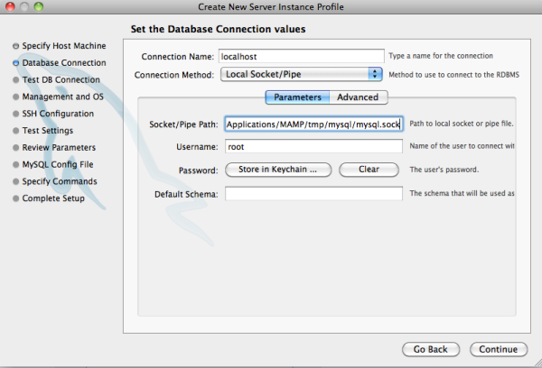

Apache NetBeans
Apache NetBeansLatest release
Configurando PHP, Apache, MySQL e Xdebug para desenvolvimento de PHP no MAC OS X
| This tutorial needs a review. You can edit it in GitHub following these contribution guidelines. |
Este tutorial mostra como configurar o PHP no pacote MAMP (M*acintosh, A*pache, *M*ySQL, *P*HP), que inclui o servidor web Apache, o servidor de banco de dados MySQL e o mecanismo PHP. O MAMP destina-se a um ambiente de desenvolvimento de PHP para o Mac, que pode funcionar perfeitamente com o NetBeans IDE.
Xdebug é uma extensão para PHP que ajuda a fornecer informações valiosas para depuração de scripts PHP. O depurador do NetBeans funciona sobre a extensão Xdebug, fornecendo uma ferramenta de depuração eficiente no ambiente de desenvolvimento.
Para concluir este tutorial, você precisa dos seguintes recursos e softwares.
| Software ou Recurso | Versão Necessária |
|---|---|
Pacote de download do PHP |
|
7 ou 8 |
|
1.7.x |
|
Xdebug (opcional) |
2.x |
| o pacote MAMP inclui o servidor web Apache, o mecanismo PHP e o banco de dados MySQL. O Mac OS X 10.5 e mais recente incluem o banco de dados MySQL e o servidor Apache com suporte PHP. Embora certamente seja possível configurar o banco de dados e o servidor incorporado com o IDE, o pacote tudo em um do MAMP oferece uma solução prática e facilmente configurável. |
Instalando e Configurando o MAMP
-
Faça o download da versão mais recente do MAMP.
-
Extraia o arquivo de download e execute o arquivo
.dmg. Quando o instalador for exibido, arraste o MAMP para a pasta/Applications.

Figure 1. Painel do instalador do MAMP mostrando as opções MAMP e MAMP-Pro
-
Navegue até
/Applications/MAMPe clique duas vezes emMAMP.app. É aberto o Painel de Controle do MAMP.
Você também pode instalar o widget do painel de controle do MAMP conforme descrito em MAMP/README.rtf, que permite iniciar e interromper servidores.

-
Clique em Preferências para abrir o painel Preferências; em seguida, selecione a guia Portas.
-
Clique em Definir como Padrão as portas do Apache e MySQL. A porta do Apache é redefinida como 80 e a do MySQL como 3306.

Figure 2. Painel de controle do MAMP com a guia Portas, depois que as portas foram alteradas para os valores padrão
Registrando o Banco de Dados MySQL do MAMP
O banco de dados MySQL do MAMP por padrão está localizado em /Applications/MAMP/db/MySQL. O nome de usuário e a senha padrão são root, o que pode ser visto nos detalhes da página de boas-vindas do MAMP que é aberta em um browser quando você executa o MAMP.
As interfaces do IDE com bancos de dados na janela Serviços (⌘-5). Você pode registrar o banco de dados MySQL do MAMP da seguinte forma:
-
Clique com o botão direito do mouse no nó Bancos de Dados > MySQL Server e escolha Propriedades. A caixa de diálogo Propriedades do MySQL Server é exibida. É possível configurar todas as definições do MySQL nessa caixa de diálogo.
-
Informe o nome do host e o número da porta do servidor de banco de dados, bem como o nome de usuário e a senha. Todas essas informações são exibidas na página de boas-vindas do MAMP quando você executa o servidor e o banco de dados. As definições padrão para executar o MAMP localmente são:
-
*Nome do Host do Servidor: *
localhost -
*Número da Porta do Servidor: *
3306 -
*Nome do Usuário Administrador: *
root -
*Senha de Administrador: *
root
-

Figure 3. Caixa de diálogo Propriedades Básicas do MySQL contendo as definições de conectividade padrão do MAMP
-
Selecione a guia Propriedades de Admin para exibir as definições que permitem a você iniciar e interromper o servidor de banco de dados no IDE. O MAMP mantém os scripts de shell na pasta
bin. Nessa pasta, você encontra os scripts para iniciar e interromper os servidores. Para o caminho até a ferramenta Admin, você tem uma opção: pode estabelecer um link comMAMP.appde modo que possa usar o IDE para abrir o painel de controle do MAMP. Para isso, digite/Applications/MAMP/MAMP.app. Entretanto, uma opção alternativa seria usar o MySQL Workbench, que oferece uma interface GUI intuitiva para a execução de operações administrativas (isto é, configurar e monitorar o servidor MySQL, gerenciar usuários e conexões, fazer backups etc.). Para usar o MySQL Workbench, faça primeiramente o download e instale-o; em seguida, especifique as seguintes definições na caixa de diálogo:-
*Caminho/URL para a ferramenta admin: *
/Applications/MySQL Tools/MySQLWorkbench.app(instalação padrão do MySQL Workbench) -
*Caminho para o comando de início: *
/Applications/MAMP/bin/startMysql.sh -
*Caminho para o comando de interrupção: *
/Applications/MAMP/bin/stopMysql.sh
-

Figure 4. Caixa de diálogo Propriedades de Admin do MySQL contendo definições de administração de amostra
-
Se você optar por usar o MySQL Workbench como sua ferramenta admin do MySQL, especifique o soquete para conexão com o banco de dados do MAMP. Inicie o MySQL Workbench e, na página principal, clique em Nova Instância do Servidor, na coluna Administração do Servidor.

-
A caixa de diálogo Criar Perfil da Nova Instância do Servidor é aberta. Selecione o método de conexão Soquete/Pipe Local e adicione o caminho para o arquivo do soquete na guia Parâmetros. O local padrão do soquete é:
/Applications/MAMP/tmp/mysql/mysql.sock.

Criando Projetos PHP
Quando você criar um projeto PHP no IDE usando recursos do MAMP, especifique para que o IDE copie os códigos-fonte na pasta htdocs do Apache. Dessa forma, depois de salvar seus arquivos após fazer alterações, os códigos-fonte sejam atualizados automaticamente na versão implantada.
Por exemplo, ao criar um novo projeto PHP, use o Assistente de Novo Projeto (clique no ícone Novo Projeto, na barra de ferramentas do IDE (  ). Na terceira etapa do assistente, Executar Configuração, selecione a opção Copiar arquivos da Pasta de Códigos-fonte para outro local, e digite o caminho para a pasta
). Na terceira etapa do assistente, Executar Configuração, selecione a opção Copiar arquivos da Pasta de Códigos-fonte para outro local, e digite o caminho para a pasta htdocs.

O IDE se lembrará desse local nos projetos futuros. Para obter instruções adicionais sobre como criar projetos PHP no NetBeans IDE, consulte Configurando um Projeto PHP.
Ativando o Xdebug com MAMP
O MAMP contém um arquivo xdebug.so pré-compilado. Para usar esse arquivo, ative-o no php.ini do MAMP. O Xdebug não funciona com o Zend Optimizer; por isso, desative também o Zend Optimizer no arquivo php.ini .
Para ativar o Xdebug com o MAMP:
-
Abra o arquivo
php.iniem um editor de texto. Esse arquivo se encontra em
/Applications/MAMP/conf/php5/php.ini.
-
Localize a seção
[Zend]e transforme cada linha em comentário.
;[Zend]
;zend_optimizer.optimization_level=15
;zend_extension_manager.optimizer=/Applications/MAMP/bin/php5/zend/lib/Optimizer-3.3.3
;zend_optimizer.version=3.3.3
;zend_extension=/Applications/MAMP/bin/php5/zend/lib/ZendExtensionManager.so-
Localize a seção
[xdebug]e ative o Xdebug (substituaxxxxxxxxpelo número real). Adicione essa seção ao final dephp.inise não estiver lá.
[xdebug]
xdebug.default_enable=1
xdebug.remote_enable=1
xdebug.remote_handler=dbgp
xdebug.remote_host=localhost
xdebug.remote_port=9000
xdebug.remote_autostart=1
zend_extension="/Applications/MAMP/bin/php5/lib/php/extensions/no-debug-non-zts-xxxxxxxx/xdebug.so"Para obter uma explicação dessas propriedades, consulte Related Settings na documentação Xdebug Remote Debugging.
-
Observe que a porta remota especificada para o Xdebug na etapa anterior é 9000. Essa é a porta do depurador padrão usada no NetBeans. Para confirmar, escolha NetBeans > Preferências no menu principal e selecione PHP na janela Opções.

Figure 5. A porta de depuração pode ser definida na janela Opções PHP
Se for necessário, você poderá alterar a porta do depurador aqui.
-
Abra o painel de controle do MAMP e selecione a guia PHP. Desmarque Zend Optimizer.

Figure 6. Painel de Controle do MAMP com a guia PHP, depois que o Zend Optimizer foi desmarcado
-
Inicie (ou reinicie) o servidor Apache do MAMP.
Depurando Projetos PHP
Para depurar um projeto PHP no IDE, clique com o botão direito do mouse no projeto, na janela Projetos, e escolha Depurar. Como alternativa, se o projeto estiver destacado na janela Projetos, você poderá clicar no ícone Depurar Projeto (  ) na barra de ferramentas principal.
) na barra de ferramentas principal.
Você pode definir o depurador para ser suspenso na primeira linha de código, ativando essa opção na janela Opções PHP.
Quando uma sessão do depurador está ativa, a barra de ferramentas do depurador é exibida acima do editor.

Figure 7. A barra de ferramentas do depurador em um estado suspenso
Você também pode abrir a janela Sessões para confirmar se uma sessão de depuração PHP está ativa. No menu principal, escolha Janela > Depuração > Sessões.

Figure 8. A janela Sessões indica que uma sessão do depurador Xdebug está ativa
Consulte Também
Para obter mais informações sobre a tecnologia PHP no netbeans.org, consulte os seguintes recursos:
-
O Editor PHP no NetBeans IDE 6.9-7.0. Um screencast demonstrando o novo suporte do editor PHP.
-
Depurando Código-fonte PHP. Um documento que descreve como depurar no IDE usando o Xdebug.
-
Criando uma Aplicação CRUD. Um tutorial em 9 partes que demonstra como criar uma aplicação CRUD usando o editor PHP do IDE.
-
Implantando uma Aplicação PHP em um Servidor Web Remoto. Um documento que fornece diretrizes de como implantar uma aplicação PHP em um servidor remoto onde você tem uma conta de hospedagem.
Para enviar comentários e sugestões, obter suporte e manter-se informado sobre os desenvolvimentos mais recentes das funcionalidades de desenvolvimento PHP do NetBeans IDE, junte-se à lista de correspondência users@php.netbeans.org.